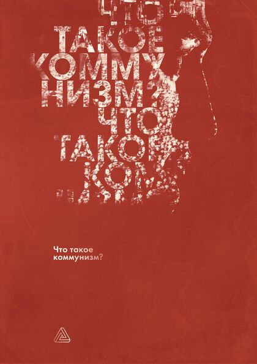

Что такое коммунизм?
Що таке комунізм? · Che cos'è il comunismo? · What Is Communism?
Группа Энгельс
Что такое коммунизм?
Коммунизм не как миф, ругательство или ностальгия, а как научная теория: что делает общество коммунистическим и как в нём устроены собственность, труд, управление, семья и сознание.
Читать онлайнСодержание
- Изобретаем «очки-велосипед»
- Предисловие
- Основание коммунизма
- Коммунизм как реальность в общественном производстве
- Общая (общественная) собственность
- Необходимый труд и условия для коммунистической деятельности
- Коммунизм и управление общественной жизнью
- Коммунизм и личность
- Коммунизм и семья
- Коммунизм и общественное сознание
- Заключение
Що таке комунізм?
Комунізм не як міф, лайка чи ностальгія, а як наукова теорія: що робить суспільство комуністичним і як у ньому влаштовані власність, праця, управління, сім’я і свідомість.
Читати онлайнЗміст
- Вигадуємо «окуляри-велосипед»
- Передмова
- Основа комунізму
- Комунізм як реальність у суспільному виробництві
- Загальна (суспільна) власність
- Необхідна праця та умови для комуністичної діяльності
- Комунізм і управління суспільним життям
- Комунізм і особистість
- Комунізм і сім’я
- Комунізм і суспільна свідомість
- Висновок
Che cos'è il comunismo?
Il comunismo non come mito, insulto o nostalgia, ma come teoria scientifica: che cosa rende comunista una società e come vi si organizzano proprietà, lavoro, gestione, famiglia e coscienza.
Leggi onlineIndice
- Inventiamo gli «occhiali-bicicletta»
- Prefazione
- Il fondamento del comunismo
- Il comunismo come realtà nella produzione sociale
- La proprietà comune (sociale)
- Il lavoro necessario e le condizioni per l'attività comunista
- Il comunismo e la gestione della vita sociale
- Il comunismo e la personalità
- Il comunismo e la famiglia
- Il comunismo e la coscienza sociale
- Conclusione
What Is Communism?
Communism not as a myth, an insult or nostalgia, but as a scientific theory: what makes a society communist, and how property, labour, management, the family and consciousness are organised in it.
Read onlineContents
- Inventing the “Bicycle Spectacles”
- Preface
- The Foundation of Communism
- Communism as a Reality in Social Production
- Common (Social) Property
- Necessary Labour and the Conditions for Communist Activity
- Communism and the Management of Social Life
- Communism and the Personality
- Communism and the Family
- Communism and Social Consciousness
- Conclusion